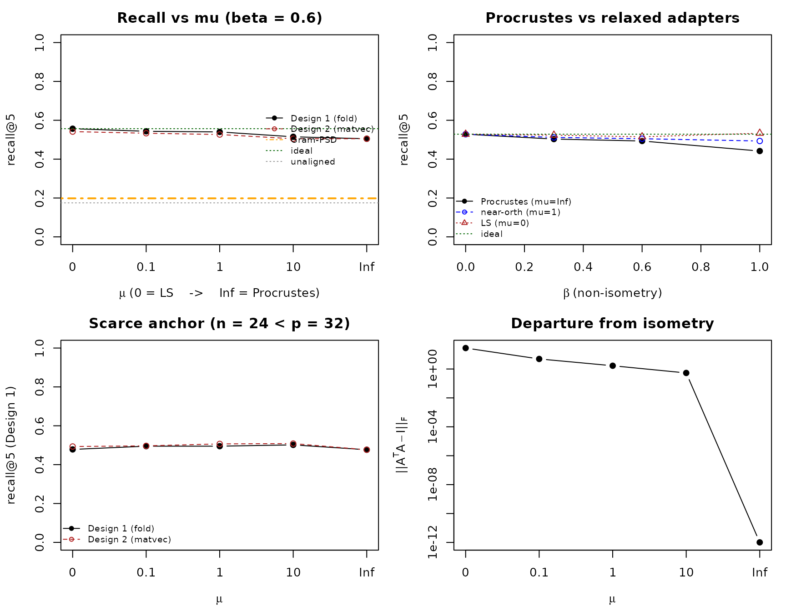

Federated Cosine Similarity with Site-Private Fine-Tuned Models
Balasubramanian Narasimhan
2026-10-03
Source:vignettes/similarity.Rmd
similarity.RmdIntroduction
Similarity search across silos is another common problem. A clinician at one hospital sees an unusual case and wants to ask “do other hospitals in our network have similar patients?” — without sending the patient out, without the other hospitals revealing which of their patients were checked, and without any single party (including a coordinating master) able to decrypt a similarity score on its own.
Modern foundation models map patient data (radiology reports, chest X-rays, pathology slides) into a fixed-dimensional vector space where geometric proximity tracks clinical similarity. The natural primitive is cosine similarity between such embeddings, which reduces to an inner product on unit-norm vectors, which is exactly what threshold CKKS computes efficiently.
The wrinkle is that hospitals do not all use the same model. We assume each hospital starts from a public foundation model and fine-tunes it on its own data for its own purposes — it does not constrain the result to be an isometry of the public model. The fine-tuned embeddings therefore differ from the public baseline by a generically non-isometric transformation of the geometry, and a query in the public-model space is no longer directly comparable to a database vector in a hospital’s private space.
One way to close the gap is with a per-site compatibility
adapter \(A_k\), fit post hoc on a
public anchor cohort. The adapter lives on a one-parameter family
indexed by a near-isometry penalty \(\mu\): orthogonal Procrustes at one end
(\(\mu\to\infty\)), unconstrained least
squares at the other (\(\mu = 0\)),
near-orthogonal maps in between. It is deployed in either of two ways —
applied to the encrypted query (the homomorphic matrix–vector multiply,
valid as a cosine near the orthogonal end), or folded into the database
offline so the encrypted query reduces to a plain inner product.
Threshold decryption recovers every candidate score at the master, which
ranks them and returns the top-k matches; no party can
decrypt any intermediate value unilaterally.
The setup
Three sites — labeled \(S_1, S_2, S_3\) — each hold a cohort of patients. Each cohort is embedded with the site’s privately fine-tuned model into \(\mathbf{R}^p\) for some fixed dimension \(p\) (the architecture is shared across sites; only the weights differ).
The query enters the system from a clinician who does not have access to any site’s private model. They embed their candidate patient with the public foundation model, producing \(q \in \mathbf{R}^p\). The query is encrypted under a joint threshold key whose secret-key material is shared \(n\)-of-\(n\) across the three sites.
The retrieval target is the top-\(k\) patients across all sites whose private-model embeddings are most cosine-similar to the query, returned as a list of \((\text{site\_id}, \text{local\_patient\_id}, \text{score})\) tuples.
The difficulty is that \(q\) lives in the public-model geometry while each site’s database lives in the site’s private-model geometry. We close the gap with a per-site compatibility adapter \(A_k\) fit on a public anchor cohort. \(A_k\) is held privately by site \(k\) and never leaves; it is applied to encrypted queries to bring them into agreement with site \(k\)’s geometry before the inner-product step (or, equivalently, folded into the site’s database offline).
Threat model
Three sites and one untrusted aggregator (the master):
- Sites \(S_1, S_2, S_3\) each hold private patient embeddings, a private compatibility adapter \(A_k\), and a secret-key share \(\mathit{sk}_k\). They are honest-but-curious among themselves and toward the master. Each site sees the master’s encrypted query but cannot decrypt it; each site sees its own database in the clear (it is its own data); each site never sees other sites’ databases or scores.
- Master holds no secret-key material. It receives the encrypted query from the querier, broadcasts it to the sites, collects their encrypted scores, orchestrates the n-of-n partial-decryption ceremony, sorts the results, and returns the top-\(k\) to the querier. A curious or compromised master cannot decrypt anything by itself.
- Querier sees only the top-\(k\) result tuples. Repeated adaptive queries leak structural information about the database in the same Hyrum-style sense as any retrieval system; this leakage is acknowledged but not eliminated.
What the master sees, by stage:
- The encrypted query \(\mathit{ct}_q\). Not decryptable alone.
- Per-site encrypted scores, one per candidate patient, with the site id, local index, and label in the clear alongside.
- Partial decryptions from each site. Not decryptable individually.
- After fusion, every candidate score in the clear. It sorts these and returns the top-\(k\) to the querier.
The master decrypts the whole score vector, not just the \(k\) it releases, and it does so because this implementation ranks in the clear. Nothing can do better without encrypted comparison: the global top-\(k\) is not knowable until enough scores are known to rank them. So the master’s view is one row per candidate patient in the whole federation — site, local index, label, and score — and the querier’s view is the top-\(k\) of it.
The site-private compatibility adapters \(\{A_k\}\) never leave their sites. Each is applied to an encrypted vector while it stays encrypted — an unencrypted matrix times an encrypted vector — or else folded into the site’s database offline, so the adapter never appears in the clear at any party other than its owner.
The protocol
The protocol has three phases. The setup phase runs once, offline; the query phase and result phase run for each query.
Setup phase.
- The three sites jointly generate a CKKS threshold key pair (\(n\)-of-\(n\)). Joint rotation keys for slot rotations \(1, 2, \ldots, p-1\) are also generated by an \(n\)-of-\(n\) ceremony.
- A public anchor cohort of patients with public-model embeddings is published.
- Each site embeds the anchor cohort with its private fine-tuned model and fits its \(p \times p\) compatibility adapter \(A_k\) along the \(\mu\) family (orthogonal Procrustes at \(\mu\to\infty\), least squares at \(\mu = 0\)).
- Each site stores its local cohort, embedded with the private model and normalized to unit length — and, for the fold (Design 1) deployment, the public-compatible images of those vectors.
Query phase. The querier embeds their candidate patient with the public model, normalizes to unit length, encrypts into a single slot-packed encrypted vector under the joint public key, and broadcasts that to the master.
For each site \(k\):
- The site receives the encrypted query \(\mathit{ct}_q\).
- The site applies its private \(A_k\) to the encrypted query via diagonal-encoded matrix–vector multiplication, producing \(\mathit{ct}_{A_k q}\) (Design 2). Near the orthogonal end of the family the result is unit-norm, so the score is a genuine cosine; alternatively the site skips this step and scores the query directly against its folded public-compatible database (Design 1).
- The site computes inner products against each of its local embeddings \(v_{k,i}\) via slot-wise multiplication followed by log-\(p\) rotation-and-add slot summation, producing one encrypted scalar per local patient.
- The site returns its encrypted scores to the master, alongside its local patient indices in the clear.
Result phase.
- The master concatenates encrypted scores across all sites. In v1, local indices are kept in the clear alongside the encrypted scores; encrypted top-\(k\) selection in CKKS is feasible but adds depth and complexity orthogonal to this vignette’s pedagogical aim.
- The master collects partial decryption shares from all three sites for the encrypted scores. Fusion yields the scores in the clear; the master sorts them there and returns the top-\(k\) to the querier.
Synthetic data
The vignette uses fully synthetic data so it renders quickly during package build. The phenotype-mixture model below is the simplest setup that gives a meaningful retrieval ground truth.
suppressPackageStartupMessages({
library(homomorpheR)
library(openfhe.R)
})
set.seed(20260428)
p <- 32L
n_sites <- 3L
cohort_sizes <- c(80L, 60L, 100L)
n_anchor <- 100L
n_phenotypes <- 5L
top_k <- 5LA patient is one of n_phenotypes clinical phenotypes.
Each phenotype is a Gaussian cluster in \(\mathbf{R}^p\). Phenotype labels are the
retrieval ground truth: a query of phenotype \(j\) should be matched to database patients
of phenotype \(j\).
phenotype_centers <- matrix(rnorm(n_phenotypes * p, sd = 1),
n_phenotypes, p)
embed_public <- function(n) {
labels <- sample.int(n_phenotypes, n, replace = TRUE)
centers <- phenotype_centers[labels, , drop = FALSE]
noise <- matrix(rnorm(n * p, sd = 0.4), n, p)
z <- centers + noise
z <- z / sqrt(rowSums(z^2)) # unit norm
list(z = z, label = labels)
}A site fine-tunes for its own purposes; it does not constrain the result to be an isometry of the public model. We therefore model the per-site drift as a non-isometric linear map \(B_k = Q_k D_k\) — a random rotation \(Q_k\) composed with a diagonal stretch \(D_k = \mathrm{diag}(e^{\beta g})\), \(g\) standard normal. The parameter \(\beta\) is the non-isometry magnitude: \(\beta = 0\) recovers an exactly orthogonal drift (the special case where the geometry is merely rotated), and \(\beta > 0\) stretches the embedding directions anisotropically, as a freely fine-tuned model generically would. The site’s embeddings are unit-normalized after the map, so the drift acts on the sphere.
random_drift <- function(p, beta) {
## Free fine-tuning, simulated as B = Q D: a random rotation Q
## composed with an anisotropic stretch D = diag(exp(beta g)).
## beta = 0 gives an exactly orthogonal (isometric) drift;
## beta > 0 is non-isometric, the generic fine-tuned case.
Q <- qr.Q(qr(matrix(rnorm(p * p), p, p)))
if (beta == 0) return(Q)
Q %*% diag(exp(beta * rnorm(p)))
}
embed_private <- function(z_public, B_k) {
## Site k's fine-tuned model in column-vector convention:
## f_k(x) = B_k · f(x). For a matrix z_public of n row-stacked
## vectors, the private embeddings are z_public %*% t(B_k),
## then unit-normalized (the drift acts on the sphere; under a
## non-isometric B the normalization is a genuine nonlinearity).
v <- z_public %*% t(B_k)
v / sqrt(rowSums(v^2))
}The public anchor cohort is a small, publicly-available set of patient examples. Each site embeds the anchors twice — once with the public model (giving \(Z_{\text{pub}}\), identical at every site by construction) and once with its own private fine-tuned model (giving \(Z_{\text{priv},k}\)). The pair drives a post-hoc compatibility adapter \(A_k\) that maps the site’s private geometry back to the public protocol, fit by
\[ \min_{A}\ \lVert Z_{\text{priv},k}\,A - Z_{\text{pub}}\rVert_F^2 \;+\; \mu\,\lVert A^\top A - I\rVert_F^2 . \]
The penalty parameter \(\mu\) traces a one-parameter family. At \(\mu \to \infty\) the adapter is forced orthogonal and the fit is the classical orthogonal Procrustes problem, solved in closed form by the singular value decomposition — this is the rigid endpoint, exact only when the drift is itself isometric. At \(\mu = 0\) the adapter is an unconstrained least-squares map, computed with a small ridge on the normal equations, the best public-space fit but generically non-isometric. Intermediate \(\mu\) interpolates: a near-orthogonal map. We deploy \(A_k\) by applying it to the encrypted query, \(\langle A_k q,\, v\rangle\), which recovers the public-space cosine \(\langle q, u\rangle\) when the adapter inverts the drift (exactly, in the orthogonal limit).
fit_adapter <- function(Z_priv, Z_pub, mu) {
## Compatibility adapter A (private -> public): Z_priv A ~ Z_pub,
## with a near-isometry penalty mu * ||A^T A - I||^2.
p <- ncol(Z_priv)
if (is.infinite(mu)) { # orthogonal Procrustes
sv <- svd(crossprod(Z_priv, Z_pub))
return(sv$u %*% t(sv$v))
}
A_ls <- solve(crossprod(Z_priv) + 1e-6 * diag(p), crossprod(Z_priv, Z_pub))
if (mu == 0) return(A_ls) # least squares
fn <- function(par) { A <- matrix(par, p, p) # near-orthogonal
sum((Z_priv %*% A - Z_pub)^2) + mu * sum((crossprod(A) - diag(p))^2) }
gr <- function(par) { A <- matrix(par, p, p)
as.vector(2 * crossprod(Z_priv, Z_priv %*% A - Z_pub) +
4 * mu * (A %*% (crossprod(A) - diag(p)))) }
matrix(optim(as.vector(A_ls), fn, gr, method = "L-BFGS-B",
control = list(maxit = 400))$par, p, p)
}A convex alternative is Gram (metric) learning: fit a positive-semidefinite \(M\) matching the public Gram matrix, \(\min_{M\succeq0}\lVert Z_{\text{priv}}MZ_{\text{priv}}^\top - Z_{\text{pub}}Z_{\text{pub}}^\top\rVert_F^2\). Its minimizer is \(M = A_{\text{LS}}A_{\text{LS}}^\top\), and we deploy its symmetric square root. The sweep below compares it with the \(\mu\) family.
fit_gram <- function(Z_priv, Z_pub) {
M <- tcrossprod(solve(crossprod(Z_priv) + 1e-6 * diag(ncol(Z_priv)),
crossprod(Z_priv, Z_pub)))
e <- eigen(M, symmetric = TRUE)
e$vectors %*% (sqrt(pmax(e$values, 0)) * t(e$vectors)) # symmetric M^{1/2}
}
unit_rows <- function(Z) Z / sqrt(rowSums(Z^2)) # for Design-1 foldingA moderate non-isometry magnitude drives the protocol walk-through; the sweeps later vary it:
beta_demo <- 0.6
mu_demo <- Inf # orthogonal endpoint for the encrypted walk-throughThe site cohorts and anchor cohort are sampled from the same phenotype-mixture model (in real deployments the anchor cohort is publicly distributed and its phenotype distribution is set once; we approximate by independent sampling).
public_anchor <- embed_public(n_anchor)
public_query <- embed_public(1L) # one query for the protocol walk-through
site_cohorts <- lapply(cohort_sizes, embed_public)We later fit one adapter \(A_k\) per site, build both the raw-private and folded public-compatible databases, and report retrieval recall as the non-isometry \(\beta\) and the penalty \(\mu\) vary.
Threshold key generation
The three sites jointly construct a CKKS keypair so that the secret
key is split \(n\)-of-\(n\) across them.
make_threshold_master() from homomorpheR walks
that chain across the sites: each site generates its own share, keeps
it, and passes on only a public key. The master is handed the joint
public key and holds no secret material at all.
Because the joint key is built from the sites, the sites are constructed first.
cc <- fhe_context(
scheme = "CKKS",
multiplicative_depth = 3L,
scaling_mod_size = 45L,
batch_size = p,
features = c(Feature$MULTIPARTY, Feature$KEYSWITCH))
sites <- lapply(seq_len(n_sites), function(k)
make_worker(paste("Site", k), data = NULL,
contribution_fn = function(data, theta) NULL))
master <- make_threshold_master(name = "master",
crypto_context = cc,
sites = sites)
## Published once, when key generation completes, to every party that
## will encrypt -- the sites and the querying party alike. It is public
## in full, and it is the last thing anyone needs from the aggregator.
## `site_params()` asks a site what it is holding; no aggregator is
## involved, and the object has no property a key share could sit in.
pub <- site_params(sites[[1]])
pub## <OpenFHEParams> CKKS
## public key 591d138acd9a79e6cea5ba212d9dbb35
## secret material: noneA CKKS encrypted value holds a vector of numbers, one per
slot, and arithmetic acts on all slots at once. Setting
batch_size = p gives each encrypted value exactly \(p\) = 32 slots, so one embedding fills one
encrypted value, a coordinate per slot.
Site \(k\)’s share lives in
sites[[k]]@state$sk and nowhere else.
decrypt(master, ct, len) dispatches on
ThresholdMaster and runs the \(n\)-of-\(n\) ceremony by asking each site for a
partial decryption — no party ever holds a usable secret unilaterally,
the aggregator included.
Everything below encrypts with pub. No party consults
the aggregator again; each holds what it was given and works from
that.
Joint rotation keys
The matrix–vector multiply step in the protocol is implemented as a diagonal-encoded matvec. For a \(p \times p\) matrix \(M\) and an encrypted vector \(q \in \mathbf{R}^p\) held one component per slot:
\[ M \cdot q \;=\; \sum_{i=0}^{p-1} d_i \odot \mathrm{rot}(q, i), \]
where \(d_i\) is the \(i\)-th diagonal of \(M\) (a \(p\)-vector, and never encrypted), \(\odot\) is slot-wise multiplication, and \(\mathrm{rot}(q, i)\) cyclically rotates the slots of \(q\) by \(i\). Each rotation requires a precomputed rotation key. In single-key CKKS these are generated from the secret key; in threshold CKKS they are generated by an \(n\)-of-\(n\) ceremony that mirrors the encryption-key ceremony.
The inner-product step adds a second use of rotation keys: the log-\(p\) rotation-and-add reduction that sums the slots of an encoded \(p\)-vector into slot 0. The same set of rotation indices serves both purposes; we generate keys for indices \(1, \ldots, p-1\) and rely on the subset that each step needs.
rotation_indices <- seq_len(p - 1L)
joint_pk_tag <- get_key_tag(master@joint_pubkey)
## Each of the two functions below runs *at a site*, and touches only
## that site's own share. Nothing collects the shares into one list:
## a variable holding every `sk` would be exactly the single point of
## compromise the n-of-n split exists to remove.
## Lead site. Generates its rotation keys under its own share, which
## populates the context's automorphism-key registry under that
## share's tag, and returns the resulting (public) key map.
site_rotation_lead <- function(site, indices) {
eval_rotate_key_gen(cc, site@state$sk, indices)
get_eval_automorphism_key_map(get_key_tag(site@state$sk))
}
## A following site. Contributes its share of the rotation keys to the
## running joint map and returns the contribution.
site_rotation_share <- function(site, running, indices, tag)
multi_eval_at_index_key_gen(cc, site@state$sk, running,
index_list = indices, key_tag = tag)
rot_running <- site_rotation_lead(sites[[1]], rotation_indices)
## Sites 2..n contribute their rotation-key shares in turn.
## At each step, the running joint share is registered under
## the cumulative-pubkey tag — which for our `make_threshold_master`
## is the same `joint_pk_tag` at every step (the chain daisy-chains
## pubkeys forward but only the final joint pubkey is retained).
for (k in 2:n_sites) {
share_k <- site_rotation_share(sites[[k]], rot_running,
rotation_indices, joint_pk_tag)
rot_running <- multi_add_eval_automorphism_keys(
cc, rot_running, share_k, key_tag = joint_pk_tag)
}
insert_eval_automorphism_key(rot_running, key_tag = joint_pk_tag)After insertion, any value encrypted under the joint public key
(i.e., under master@joint_pubkey) can be rotated by any
index in rotation_indices via
eval_rotate(ct, idx).
A round-trip smoke test confirms the joint rotation key works. We encrypt a known vector, rotate by 3 slots, decrypt via the \(n\)-of-\(n\) ceremony, and check that slot \(i\) now holds \(x_{(i+3) \bmod p}\):
x <- 1:p
ct_x <- encrypt(pub, x)
ct_rot <- eval_rotate(ct_x, 3L)
recovered <- decrypt(master, ct_rot, len = p)
expected <- x[((seq_len(p) - 1L + 3L) %% p) + 1L]
stopifnot(max(abs(recovered - expected)) < 1e-6)
cat("rotation round-trip max error:",
sprintf("%.2e\n", max(abs(recovered - expected))))## rotation round-trip max error: 7.05e-12Per-site adapter fit and database setup
For the encrypted walk-through we fit the adapter at the orthogonal endpoint (\(\mu = \infty\)), so the map applied to the query is exactly norm-preserving and the matrix–vector multiply below produces a unit-norm result — the regime in which the raw-private-database matvec (Design 2) is a valid cosine. The recall sweeps later vary \(\mu\) and the drift. Each site’s fine-tuned model is the non-isometric \(B_k\); the adapter \(A_k\) is fit post hoc on the public anchor cohort.
B <- lapply(seq_len(n_sites), function(k) random_drift(p, beta_demo))
## Each site's private database, embedded under that site's
## fine-tuned model and unit-normalized on the sphere.
db <- lapply(seq_len(n_sites), function(k) {
cohort <- site_cohorts[[k]]
list(z = embed_private(cohort$z, B[[k]]),
label = cohort$label)
})
## Each site fits its compatibility adapter on the anchor cohort.
A_hat <- lapply(seq_len(n_sites), function(k) {
Z_pub <- public_anchor$z
Z_priv <- embed_private(Z_pub, B[[k]])
fit_adapter(Z_priv, Z_pub, mu_demo)
})
## Design-1 deployment: the adapter folded into the database
## offline, giving unit-norm public-compatible vectors that an
## encrypted public-model query scores directly. (At mu = Inf the
## adapter is orthogonal, so folding is norm-preserving and
## Design 1 and Design 2 coincide; they part company at finite mu.)
db_fold <- lapply(seq_len(n_sites), function(k)
list(z = unit_rows(db[[k]]$z %*% A_hat[[k]]), label = db[[k]]$label))
## Setup diagnostics the master would receive: anchor-reconstruction
## error and the adapter's departure from isometry.
cat("Per-site adapter diagnostics (beta =", beta_demo, ", mu = Inf):\n")## Per-site adapter diagnostics (beta = 0.6 , mu = Inf):
for (k in seq_len(n_sites)) {
Zr <- embed_private(public_anchor$z, B[[k]])
recon <- norm(Zr %*% A_hat[[k]] - public_anchor$z, "F")
aniso <- norm(crossprod(A_hat[[k]]) - diag(p), "F")
cat(sprintf(" site %d: anchor recon %.2e, ||A^T A - I||_F %.2e\n",
k, recon, aniso))
}## site 1: anchor recon 2.28e+00, ||A^T A - I||_F 9.29e-15
## site 2: anchor recon 1.72e+00, ||A^T A - I||_F 9.69e-15
## site 3: anchor recon 3.01e+00, ||A^T A - I||_F 9.24e-15Diagonal-encoded matrix-vector multiply
The CKKS-friendly way to multiply an unencrypted \(p \times p\) matrix into an encrypted vector is the diagonal encoding. The matrix \(M\) is decomposed into its \(p\) generalized diagonals, each an unencrypted length-\(p\) vector:
\[ d_i[j] = M[\,j,\, (j + i) \bmod p\,], \qquad i = 0, 1, \ldots, p-1. \]
The matrix–vector product becomes
\[ M \cdot q \;=\; \sum_{i=0}^{p-1} d_i \,\odot\, \mathrm{rot}(q, i), \]
where \(\odot\) is slot-wise multiplication and \(\mathrm{rot}(q, i)\) is the \(i\)-step cyclic slot rotation. Each term multiplies an encrypted vector by an unencrypted one and adds the result to a running encrypted total. The cost is \(p\) rotations and \(p\) such multiplications per matrix-vector product, and it consumes a single level of the precision budget.
Multiplying by an unencrypted vector rather than an encrypted one is what keeps that cost down: the adapter \(A_k\) is the site’s own, so it never needs encrypting, and the operation is correspondingly cheaper than multiplying two encrypted quantities together.
build_diagonals <- function(M, p) {
## d_i[j] = M[j, ((j-1 + i) %% p) + 1] (1-based R indexing)
lapply(0:(p - 1L), function(i) {
vapply(seq_len(p),
function(j) M[j, ((j - 1L + i) %% p) + 1L],
numeric(1L))
})
}
encrypted_matvec <- function(ct_q, M, cc, p) {
diags <- build_diagonals(M, p)
ct_acc <- NULL
for (i in 0:(p - 1L)) {
d_pt <- make_ckks_packed_plaintext(cc, diags[[i + 1L]])
ct_term <- if (i == 0L) {
eval_mult(ct_q, d_pt)
} else {
eval_mult(eval_rotate(ct_q, i), d_pt)
}
ct_acc <- if (is.null(ct_acc)) ct_term else eval_add(ct_acc, ct_term)
}
ct_acc
}A round-trip smoke test on a known query vector confirms the matvec recovers \(A_1 \cdot q\) to floating-point precision:
q_demo <- public_query$z[1, ]
ct_q <- encrypt(pub, q_demo)
ct_Aq <- encrypted_matvec(ct_q, A_hat[[1]], cc, p)
Aq_recovered <- decrypt(master, ct_Aq, len = p)
Aq_expected <- as.numeric(A_hat[[1]] %*% q_demo)
cat(sprintf("matvec max error (site 1): %.2e\n",
max(abs(Aq_recovered - Aq_expected))))## matvec max error (site 1): 2.44e-11Inner product against the local database
After the matvec, the encrypted query has been mapped by the adapter into site \(k\)’s private geometry (unit-norm at the orthogonal endpoint used here). The cosine similarity against a private-database vector \(v\) (also unit-norm, and never encrypted since it never leaves the site) is just
\[ \cos(A_k q,\, v) \;=\; \langle A_k q,\, v \rangle \;=\; \sum_{j=1}^{p} (A_k q)_j \cdot v_j. \]
In CKKS this is a slot-wise multiply of the matvec output by the unencrypted \(v\), followed by a log-\(p\) rotate-and-add slot-summation reduction that places the summed inner product in slot 0.
slot_sum_reduction <- function(ct, p) {
## Standard CKKS log-p reduction. The rotations are cyclic over
## the whole batch, and here the batch is exactly p slots wide,
## so after the loop *every* slot holds the same value: the full
## sum_{j=1}^{p} ct[j]. We read slot 0 by convention.
step <- p %/% 2L
while (step >= 1L) {
ct <- eval_add(ct, eval_rotate(ct, step))
step <- step %/% 2L
}
ct
}
encrypted_inner_product <- function(ct_x, v_plain, cc, p) {
pt_v <- make_ckks_packed_plaintext(cc, v_plain)
ct_prod <- eval_mult(ct_x, pt_v)
slot_sum_reduction(ct_prod, p)
}A smoke test against a single database vector confirms the inner product matches the unencrypted computation at slot 0:
v_test <- db[[1]]$z[1, ]
ct_score <- encrypted_inner_product(ct_Aq, v_test, cc, p)
score_recovered <- decrypt(master, ct_score, len = 1L)
score_expected <- sum(Aq_expected * v_test)
cat(sprintf("inner-product error (site 1, patient 1): %.2e\n",
abs(score_recovered - score_expected)))## inner-product error (site 1, patient 1): 1.90e-11The same encrypted_inner_product serves the
Design 1 deployment without any matvec: the encrypted
public-model query is scored directly against the folded,
public-compatible database vectors. At the orthogonal endpoint this
matches the matvec route exactly; for a non-isometric adapter it is the
route that stays a valid cosine.
ct_score_fold <- encrypted_inner_product(ct_q, db_fold[[1]]$z[1, ], cc, p)
fold_recovered <- decrypt(master, ct_score_fold, len = 1L)
fold_expected <- sum(q_demo * db_fold[[1]]$z[1, ])
cat(sprintf("Design-1 inner-product error (site 1, patient 1): %.2e\n",
abs(fold_recovered - fold_expected)))## Design-1 inner-product error (site 1, patient 1): 7.33e-12What is in the slots we do not read
The score is read from slot 0, but the decrypted value has all 32
slots, and len = 1L only limits how many are shown. Whoever
decrypts can read the rest. If those slots held partial sums, they would
reveal more than the score.
They do not. The rotations wrap around exactly \(p\) slots, so every slot ends up holding the full sum. The check below confirms that all 32 slots hold the released score.
all_slots <- decrypt(master, ct_score, len = p)
cat(sprintf("slots holding the released score: %d of %d (max deviation %.2e)\n",
sum(abs(all_slots - score_recovered) < 1e-6), p,
max(abs(all_slots - score_recovered))))## slots holding the released score: 32 of 32 (max deviation 1.46e-11)This holds only because the sum covers the whole batch. If several
patients were packed into one encrypted value, each sum would cover only
some of the slots, and the other slots would hold partial sums.
Multiplying by an unencrypted vector that is 1 in slot 0 and 0 elsewhere
clears them. That multiplication uses one level of multiplicative depth.
With multiplicative_depth = 3, the matrix–vector multiply
and the inner product use two levels, which leaves one for it.
Site contribution_fn: full per-site protocol step
The site-side computation closes over the site’s adapter \(A_k\) and database \(D_k\), takes the encrypted query as input, and returns a list of encrypted scores plus the corresponding local indices in the clear. This is the Design 2 branch: the adapter is applied to the encrypted query (the matvec), and scoring runs against the site’s raw private database.
make_similarity_site_fn <- function(A_k, db_k, cc, p) {
function(ct_q) {
ct_Aq <- encrypted_matvec(ct_q, A_k, cc, p)
n_local <- nrow(db_k$z)
ct_scores <- lapply(seq_len(n_local), function(i) {
encrypted_inner_product(ct_Aq, db_k$z[i, ], cc, p)
})
list(scores = ct_scores,
local_index = seq_len(n_local),
label = db_k$label)
}
}
site_fns <- lapply(seq_len(n_sites), function(k) {
make_similarity_site_fn(A_hat[[k]], db[[k]], cc, p)
})A timed end-to-end run on the demo query through site 1 returns one encrypted score per local patient:
t0 <- proc.time()
site1_out <- site_fns[[1]](ct_q)
site1_elapsed <- (proc.time() - t0)[["elapsed"]]
cat(sprintf("site 1 produced %d encrypted scores in %.2f s\n",
length(site1_out$scores), site1_elapsed))## site 1 produced 80 encrypted scores in 0.84 sMaster orchestration and threshold-decrypted top-k
The master broadcasts the encrypted query to every site, collects
per-site encrypted scores plus the local patient indices and labels in
the clear, and runs the \(n\)-of-\(n\) threshold decryption ceremony for each
score so it can sort them once they are in the clear and return the
top-k.
The decryption pattern is per-patient: each encrypted score goes
through one threshold-decrypt round. decrypt() sends the
encrypted score to each site in turn —
multiparty_decrypt_lead at site 1,
multiparty_decrypt_main at each of the rest, every site
applying its own share — and fuses the returned partials with
multiparty_decrypt_fusion, which needs only the public
context. For our 240 total patients this runs in a few seconds;
production deployments would pack many patients into the slots of a
single encrypted value and amortize the ceremony.
run_similarity_query <- function(ct_q, site_fns, master, top_k) {
## Fan out to every site.
site_results <- lapply(seq_along(site_fns), function(k) {
out <- site_fns[[k]](ct_q)
out$site_id <- k
out
})
## Threshold-decrypt each per-patient inner product. v1 runs
## one ceremony per patient; a packed variant that fuses
## multiple inner products into a single encrypted value
## (via slot tiling) is a natural extension.
rows <- list()
for (s in site_results) {
for (i in seq_along(s$scores)) {
score <- decrypt(master, s$scores[[i]], len = 1L)
rows[[length(rows) + 1L]] <- data.frame(
site_id = s$site_id,
local_index = s$local_index[i],
label = s$label[i],
score = score)
}
}
scored <- do.call(rbind, rows)
scored <- scored[order(-scored$score), ]
head(scored, top_k)
}
t0 <- proc.time()
top_result <- run_similarity_query(ct_q, site_fns, master, top_k = top_k)
elapsed <- (proc.time() - t0)[["elapsed"]]
cat(sprintf("Top-%d retrieval over %d sites and %d patients in %.1f s\n",
top_k, n_sites, sum(cohort_sizes), elapsed))
cat(sprintf("Query phenotype label: %d\n", public_query$label))
print(top_result, row.names = FALSE)## Top-5 retrieval over 3 sites and 240 patients in 5.6 s## Query phenotype label: 4## site_id local_index label score
## 2 37 4 0.9048070
## 2 5 4 0.9009923
## 2 11 4 0.8879220
## 1 17 4 0.8808330
## 2 55 4 0.8754569Reference-truth comparison
The protocol output is meaningful only if the inner products computed under encryption agree with the same quantities computed in the clear, to within CKKS approximation error. The reference computation runs the same \(A_k \cdot q\) adapter application and inner-product reduction unencrypted on each site’s database:
plaintext_top_k <- function(q, site_data, A_list, top_k) {
rows <- list()
for (k in seq_along(site_data)) {
Aq <- as.numeric(A_list[[k]] %*% q)
s_k <- site_data[[k]]
scores <- as.numeric(s_k$z %*% Aq)
for (i in seq_along(scores)) {
rows[[length(rows) + 1L]] <- data.frame(
site_id = k,
local_index = i,
label = s_k$label[i],
score = scores[i])
}
}
scored <- do.call(rbind, rows)
scored <- scored[order(-scored$score), ]
head(scored, top_k)
}
plain_top <- plaintext_top_k(q_demo, db, A_hat, top_k)
## Compare encrypted-domain top-k against the cleartext reference
## by joining on (site_id, local_index).
compare <- merge(top_result, plain_top,
by = c("site_id", "local_index"),
suffixes = c("_enc", "_plain"))
score_err <- max(abs(compare$score_enc - compare$score_plain))
cat(sprintf("Top-%d encrypted vs cleartext score max error: %.2e\n",
top_k, score_err))
## Whether the encrypted-domain top-k contains the same
## (site_id, local_index) pairs as the cleartext reference.
enc_set <- paste(top_result$site_id, top_result$local_index, sep = ":")
plain_set <- paste(plain_top$site_id, plain_top$local_index, sep = ":")
cat(sprintf("Top-%d set match: %d of %d\n",
top_k, length(intersect(enc_set, plain_set)), top_k))## Top-5 encrypted vs cleartext score max error: 3.42e-11## Top-5 set match: 5 of 5What the adapter buys: fidelity, posture, and a sweet spot
The encrypted mechanics work to floating-point precision, as the smoke tests and reference comparison above confirm (max error \(\sim 10^{-11}\)). So we now investigate three questions:
- Fidelity. When the drift is genuinely non-isometric, does a near-orthogonal or least-squares adapter recover retrieval that the rigid orthogonal Procrustes endpoint (\(\mu\to\infty\)) cannot?
- Posture. Where do the two deployments agree — Design 1 (fold the adapter into the database offline) and Design 2 (apply it to the encrypted query, the matvec) — and where must we prefer one? They coincide only when the adapter is orthogonal, so the per-vector norms it produces are all one.
- Sweet spot. Does an intermediate \(\mu\) ever beat both endpoints, and when?
The sweeps use a less-forgiving cluster configuration than the walk-through (unit-norm phenotype centers, so noise competes with separation), letting alignment quality rather than trivial separability drive recall.
centers_u <- phenotype_centers / sqrt(rowSums(phenotype_centers^2))
embed_cfg <- function(n, sep = 0.85, sd = 0.40) {
labels <- sample.int(n_phenotypes, n, replace = TRUE)
z <- sep * centers_u[labels, , drop = FALSE] +
matrix(rnorm(n * p, sd = sd), n, p)
list(z = unit_rows(z), label = labels)
}
recall_at_k <- function(query_label, top_rows, k = top_k)
sum(top_rows$label == query_label) / k
## Federated recall of a query population under one deployment.
## design 1: fold A into the db (unit) and score <q, z>;
## design 2: apply A to the query and score <Aq, h> against raw db.
fed_recall <- function(q_pop, db_list, A_list, design) {
mean(vapply(seq_len(nrow(q_pop$z)), function(qi) {
q <- q_pop$z[qi, ]
parts <- lapply(seq_along(db_list), function(k) {
s <- db_list[[k]]
sc <- if (design == 1L) as.numeric(unit_rows(s$z %*% A_list[[k]]) %*% q)
else as.numeric(s$z %*% as.numeric(A_list[[k]] %*% q))
data.frame(label = s$label, score = sc)
})
scored <- do.call(rbind, parts)
recall_at_k(q_pop$label[qi],
head(scored[order(-scored$score), ], top_k))
}, numeric(1)))
}
## A world at non-isometry beta with an anchor cohort of size na.
make_world <- function(beta, na) {
anchor <- embed_cfg(na)
cohorts <- lapply(cohort_sizes, embed_cfg)
Bs <- lapply(seq_len(n_sites), function(k) random_drift(p, beta))
list(anchor = anchor,
pub_db = cohorts, # public embeddings (ideal ref)
priv_db = lapply(seq_len(n_sites), function(k)
list(z = embed_private(cohorts[[k]]$z, Bs[[k]]),
label = cohorts[[k]]$label)),
Hanchor = lapply(seq_len(n_sites), function(k)
embed_private(anchor$z, Bs[[k]])))
}
I_list <- replicate(n_sites, diag(p), simplify = FALSE)
n_rep <- 3L
n_q <- 40L
mu_grid <- c(0, 0.1, 1, 10, Inf)
## --- mu sweep at fixed beta, ample anchor: fidelity + posture + Gram ---
mu_sweep <- function(beta, na) {
tab <- 0; ideal <- 0; unaligned <- 0; gram <- 0
for (r in seq_len(n_rep)) {
w <- make_world(beta, na)
qp <- embed_cfg(n_q)
ideal <- ideal + fed_recall(qp, w$pub_db, I_list, 2L)
unaligned <- unaligned + fed_recall(qp, w$priv_db, I_list, 2L)
Ag <- lapply(seq_len(n_sites), function(k) fit_gram(w$Hanchor[[k]], w$anchor$z))
gram <- gram + fed_recall(qp, w$priv_db, Ag, 1L)
rows <- lapply(mu_grid, function(mu) {
A <- lapply(seq_len(n_sites), function(k)
fit_adapter(w$Hanchor[[k]], w$anchor$z, mu))
data.frame(mu = mu,
d1 = fed_recall(qp, w$priv_db, A, 1L),
d2 = fed_recall(qp, w$priv_db, A, 2L),
aniso = mean(vapply(A, function(Ak)
norm(crossprod(Ak) - diag(p), "F"), numeric(1))))
})
tab <- tab + do.call(rbind, rows)
}
tab <- tab / n_rep
tab$mu <- mu_grid
list(tab = tab, ideal = ideal / n_rep,
unaligned = unaligned / n_rep, gram = gram / n_rep)
}
mu_main <- mu_sweep(beta = 0.6, na = 100L) # ample calibration
mu_scarce <- mu_sweep(beta = 0.6, na = 24L) # anchor < p = 32
## --- beta sweep, ample anchor: Procrustes vs near-orthogonal vs LS ---
## Common random numbers: within a replicate the public data and the
## per-site drift directions are fixed and only the stretch magnitude
## beta varies, so the no-drift ideal is a single drift-independent
## reference rather than a wandering curve.
beta_grid <- c(0, 0.3, 0.6, 1.0)
beta_acc <- 0; ideal_b <- 0
for (r in seq_len(n_rep)) {
anchor <- embed_cfg(n_anchor)
cohorts <- lapply(cohort_sizes, embed_cfg)
qp <- embed_cfg(n_q)
Qg <- lapply(seq_len(n_sites), function(k)
list(Q = qr.Q(qr(matrix(rnorm(p * p), p, p))), g = rnorm(p)))
ideal_b <- ideal_b + fed_recall(qp, cohorts, I_list, 2L)
beta_acc <- beta_acc + do.call(rbind, lapply(beta_grid, function(b) {
Bs <- lapply(Qg, function(qg)
if (b == 0) qg$Q else qg$Q %*% diag(exp(b * qg$g)))
priv <- lapply(seq_len(n_sites), function(k)
list(z = embed_private(cohorts[[k]]$z, Bs[[k]]),
label = cohorts[[k]]$label))
Hanc <- lapply(seq_len(n_sites), function(k)
embed_private(anchor$z, Bs[[k]]))
fitb <- function(mu) lapply(seq_len(n_sites), function(k)
fit_adapter(Hanc[[k]], anchor$z, mu))
data.frame(beta = b,
LS = fed_recall(qp, priv, fitb(0), 1L),
near = fed_recall(qp, priv, fitb(1), 1L),
Proc = fed_recall(qp, priv, fitb(Inf), 2L))
}))
}
beta_tab <- beta_acc / n_rep; beta_tab$beta <- beta_grid
ideal_b <- ideal_b / n_rep
cat("mu sweep (beta=0.6, anchor=100): ideal=",
sprintf("%.3f", mu_main$ideal), " unaligned=",
sprintf("%.3f", mu_main$unaligned), " Gram=",
sprintf("%.3f\n", mu_main$gram), sep = "")## mu sweep (beta=0.6, anchor=100): ideal=0.557 unaligned=0.175 Gram=0.198## mu d1 d2 aniso
## 0.0 0.557 0.542 28.150
## 0.1 0.543 0.533 4.962
## 1.0 0.540 0.527 1.680
## 10.0 0.515 0.505 0.532
## Inf 0.505 0.505 0.000
cat("\nbeta sweep (anchor=100, common random numbers): ideal=",
sprintf("%.3f\n", ideal_b), sep = "")##
## beta sweep (anchor=100, common random numbers): ideal=0.528## beta LS near Proc
## 0.0 0.528 0.528 0.528
## 0.3 0.523 0.512 0.503
## 0.6 0.515 0.505 0.493
## 1.0 0.533 0.493 0.442
cat("\nmu sweep at scarce anchor=24:\n")##
## mu sweep at scarce anchor=24:## mu d1 d2
## 0.0 0.478 0.493
## 0.1 0.495 0.497
## 1.0 0.495 0.507
## 10.0 0.502 0.508
## Inf 0.477 0.477Three readings come out of the sweeps. Fidelity (β panel): at \(\beta = 0\) the drift is isometric and Procrustes, the near-orthogonal map, and least squares all match the no-drift ideal; as the drift bends, Procrustes falls away while the relaxed adapters track the ideal — the richer map earns its keep exactly when fine-tuning is non-isometric. Posture (μ panel): Design 1 and Design 2 coincide at \(\mu \to \infty\) (where the adapter is orthogonal and the per-vector norms are all one) and separate as \(\mu\) shrinks, so the raw-database matvec is a valid cosine only near the orthogonal endpoint; the departure-from- isometry panel quantifies the budget. Sweet spot (scarce- anchor panel): when the calibration cohort is smaller than the embedding dimension, an intermediate \(\mu\) regularizes the adapter and can beat both endpoints — a secondary effect that appears only under scarce calibration. The Gram-PSD reference sits near the unaligned floor: its rotation invariance loses the public-frame orientation, so it is the wrong tool for a public-query retrieval.
op <- par(mfrow = c(2, 2), mar = c(4.2, 4.2, 2.4, 1.0))
xi <- seq_along(mu_grid)
mulab <- function(m) ifelse(is.infinite(m), "Inf", formatC(m, format = "g"))
## (1) recall vs mu: Design 1 vs Design 2, with Gram / ideal / floor
plot(xi, mu_main$tab$d1, type = "b", pch = 19, ylim = c(0, 1), xaxt = "n",
xlab = expression(mu ~ "(0 = LS -> Inf = Procrustes)"),
ylab = sprintf("recall@%d", top_k), main = "Recall vs mu (beta = 0.6)")
axis(1, xi, mulab(mu_grid))
lines(xi, mu_main$tab$d2, type = "b", pch = 1, lty = 2, col = "firebrick")
abline(h = mu_main$ideal, lty = 3, col = "darkgreen")
abline(h = mu_main$unaligned, lty = 3, col = "grey60")
abline(h = mu_main$gram, lty = 4, lwd = 2, col = "orange")
legend("right", bty = "n", cex = 0.75,
legend = c("Design 1 (fold)", "Design 2 (matvec)", "Gram-PSD",
"ideal", "unaligned"),
col = c("black", "firebrick", "orange", "darkgreen", "grey60"),
lty = c(1, 2, 4, 3, 3), pch = c(19, 1, NA, NA, NA))
## (2) recall vs beta: Procrustes vs near-orthogonal vs LS
plot(beta_tab$beta, beta_tab$Proc, type = "b", pch = 19, ylim = c(0, 1),
xlab = expression(beta ~ "(non-isometry)"), ylab = sprintf("recall@%d", top_k),
main = "Procrustes vs relaxed adapters")
lines(beta_tab$beta, beta_tab$near, type = "b", pch = 1, lty = 2, col = "blue")
lines(beta_tab$beta, beta_tab$LS, type = "b", pch = 2, lty = 3, col = "firebrick")
abline(h = ideal_b, lty = 3, col = "darkgreen")
legend("bottomleft", bty = "n", cex = 0.75,
legend = c("Procrustes (mu=Inf)", "near-orth (mu=1)", "LS (mu=0)", "ideal"),
col = c("black", "blue", "firebrick", "darkgreen"),
lty = c(1, 2, 3, 3), pch = c(19, 1, 2, NA))
## (3) recall vs mu at scarce anchor (< p): the regularization sweet spot
plot(xi, mu_scarce$tab$d1, type = "b", pch = 19, ylim = c(0, 1), xaxt = "n",
xlab = expression(mu), ylab = sprintf("recall@%d (Design 1)", top_k),
main = "Scarce anchor (n = 24 < p = 32)")
axis(1, xi, mulab(mu_grid))
lines(xi, mu_scarce$tab$d2, type = "b", pch = 1, lty = 2, col = "firebrick")
legend("bottomleft", bty = "n", cex = 0.75,
legend = c("Design 1 (fold)", "Design 2 (matvec)"),
col = c("black", "firebrick"), lty = c(1, 2), pch = c(19, 1))
## (4) departure from isometry vs mu (the Design-2 / matvec budget)
plot(xi, mu_main$tab$aniso + 1e-12, type = "b", pch = 19, log = "y", xaxt = "n",
xlab = expression(mu), ylab = expression("||" * A^T * A - I * "||"[F]),
main = "Departure from isometry")
axis(1, xi, mulab(mu_grid))
par(op)Discussion
- Federated retrieval across heterogeneous fine-tuned models. Each of \(n\) sites holds its own privately fine-tuned variant of a public foundation model; the protocol returns the top-\(k\) patients across all sites whose private-model embeddings are most cosine-similar to a public-model query. The master sees every candidate’s score.
- Site-private compatibility adapter on the \(\mu\) axis. Each site fits an adapter \(A_k\) on a public anchor cohort along the family \(\min_A \lVert Z_{\text{priv}}A - Z_{\text{pub}}\rVert^2 + \mu\lVert A^\top A - I\rVert^2\) — orthogonal Procrustes at \(\mu\to\infty\), least squares at \(\mu = 0\). The adapter never leaves the site and never appears in the clear at the master.
- Two deployments, one axis. The adapter is either applied to the encrypted query (Design 2, the matvec) or folded into the database offline (Design 1, a plain encrypted inner product). The two coincide exactly at the orthogonal endpoint (where every per-vector norm is one) and part company as \(\mu\) relaxes; Design 1 then gives correct cosines while Design 2 does not. The matvec is thus the large-\(\mu\) branch.
- Threshold key generation, \(n\)-of-\(n\). The CKKS secret key is split across all sites. The master holds no usable secret material. Any subset short of the full \(n\) cannot decrypt anything along the way.
- Diagonal-encoded matvec under threshold CKKS. A \(p \times p\) matrix–vector multiply on an encrypted vector, implemented as \(p-1\) nontrivial rotations (the \(i = 0\) diagonal needs none), \(p\) multiplications by unencrypted vectors, and \(p-1\) encrypted additions, all within one level of the precision budget. The joint rotation keys for the cyclic-slot rotations come from an \(n\)-of-\(n\) ceremony that mirrors the encryption-key ceremony.
- Inner-product reduction via \(\log p\) rotation-and-add. Slot-wise multiply by the site’s own unencrypted database vector followed by a halve-and-fold reduction places the cosine similarity in slot 0.
- Encrypted scoring, cleartext ranking. Each site’s scores are encrypted and only the \(n\)-of-\(n\) ceremony can open them, so no single party — the aggregator included — learns a score on its own. Ranking, though, happens after decryption: the aggregator threshold-decrypts every candidate score and sorts, so what it ends up holding is each candidate’s site, local index, label, and score, not a top-\(k\) release. See the Limitations below, which is where encrypted top-\(k\) would change this. The encrypted protocol’s scores agree with the same computation run unencrypted to \(\sim 10^{-11}\).
- Fidelity under non-isometric drift. When fine-tuning is a genuine non-isometry, the rigid orthogonal endpoint leaves recall on the table while a relaxed (least-squares or near-orthogonal) adapter tracks the no-drift ideal. At the isometric special case the two coincide — that special case is the orthogonal protocol of the earlier design.
Limitations
- Encrypted top-\(k\) selection. We sort in the clear after threshold-decrypting the per-patient scores, so the ceremony runs once per candidate and the aggregator ends up holding, for every candidate at every site: the site it came from, the local index, the label, and the score. That is more than a top-\(k\) release, and it is the honest description of what this implementation discloses. Ranking under encryption cannot be avoided by ordering the steps differently — without encrypted comparison, nothing can know the global top-\(k\) without first learning enough scores to rank them. Encrypted argmax / top-\(k\) via polynomial sign approximation is feasible in CKKS but adds depth and complexity orthogonal to this vignette’s pedagogical aim.
- Normalization, and what the \(\mu\)-knob trades. The near-isometry of the adapter controls the per-vector norms \(\lVert A_k^\top v\rVert\). At the orthogonal end they are all one, which buys two things at once: the homomorphic inverse-square-root (the depth-dominating Newton iteration of Qu and Xu (2023) and Prantl et al. (2024)) is avoided, and every per-site score is a cosine in \([-1,1]\) on the same scale across sites, so the raw-database matvec (Design 2) is directly comparable. As \(\mu\) relaxes for better fidelity, those norms spread; the cure is to fold the adapter into the database offline and unit-normalize there (Design 1), which restores comparable cosines at the cost of materializing public-compatible embeddings and re-folding them on a public-model upgrade. So \(\mu\) trades fidelity against the raw-database-matvec posture, with offline folding as the release valve — not a single forced choice.
- Slot-tiling for production scale. The vignette runs at \(p = 32\) with one encrypted value per database vector. Production at \(p = 512\) would pack many database vectors into the slots of a single encrypted value, amortizing the matvec and inner-product cost across patients within a site.
- Real-model validation. The synthetic data above drifts by a parameterized non-isometric \(B_k = Q_k D_k\), a controllable stand-in for free fine-tuning. Real fine-tuned foundation models (BiomedCLIP fine-tuned per site, PubMedBERT, etc.) drift in ways no parameterized family captures exactly. Validating the alignment on a real fine-tuned model is future work.
- Adaptive-query leakage. Repeated adaptive queries by the querier (or a coalition with the querier) leak structural information about the cohort — the same Hyrum-style observation that applies to any retrieval system. We do not eliminate this leakage; we acknowledge it as the cost of any released-function output.
- Malicious-secure threshold protocol. The trust model here is honest-but-curious. A malicious-secure variant would require zero-knowledge proofs of correct partial decryption and verifiable computation on the encrypted scores; that is heavy machinery and out of scope.
Related work
In cox-threshold and cvxr-cox-lasso-dlbcl
the aggregator sums the sites’ encrypted contributions. Here an
encrypted query goes to every site, each site scores it, and the
aggregator threshold-decrypts the scores. The actor functions
(make_threshold_master, make_worker,
encrypt, decrypt) are the same.
Zhao (2024) federates encrypted vector search across mutually distrusting parties. Mao et al. (2025) train retrievers by federated learning, with knowledge distillation between the server and client models and homomorphic encryption of the model parameters. Yao et al. (2024) use homomorphic encryption for entity resolution across healthcare databases.